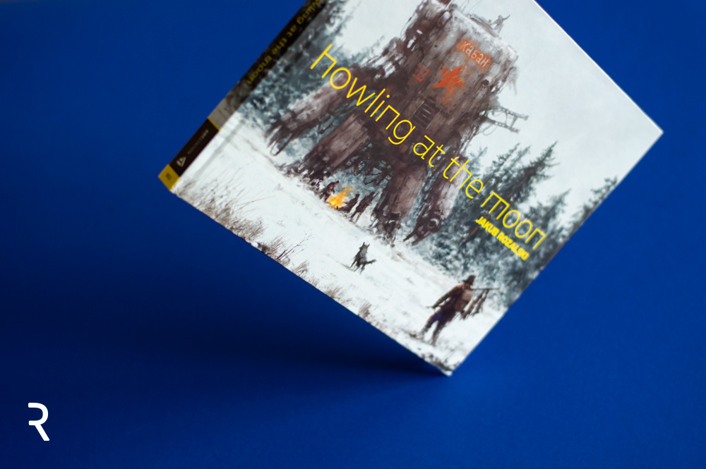
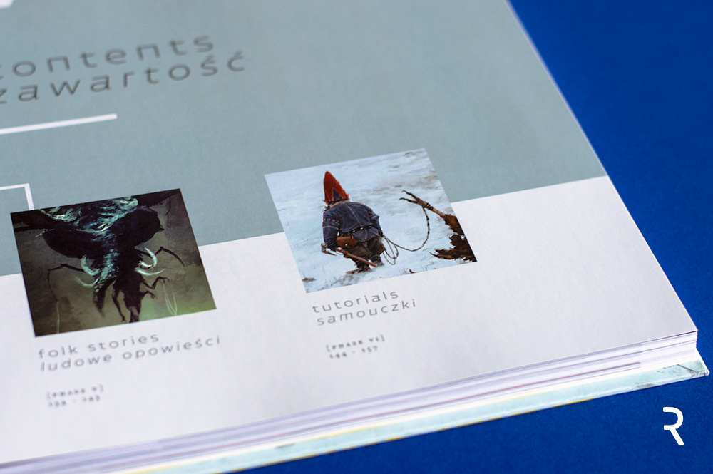
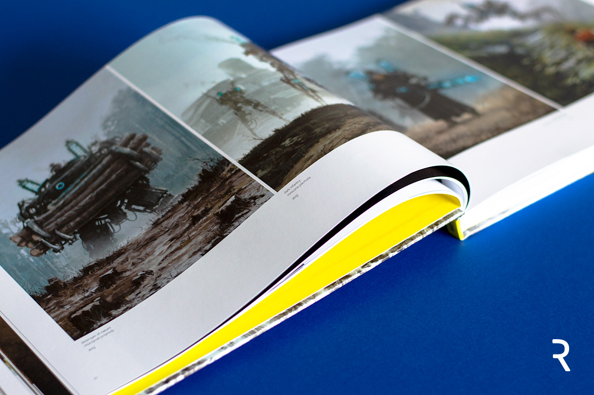

Howling at the Moon
Jak podaje wydawca: „Ta unikalna książka przetransportuje fanów do tajemniczych światów Jakuba Różalskiego, gdzie historia, folklor i współczesność zderzają się w harmonii. Zainspirowane wyobraźnią z dzieciństwa na polskiej wsi, jego niesamowite, zapierające dech w piersiach prace przeniosą was w fantastyczne alternatywne światy wypełnione olbrzymami, wielkimi maszynami, wilkami, samotnymi wędrowcami i wiejskimi krajobrazami. Prace zostały uzupełnione tekstami w języku angielskim i polskim. Fani mogą nauczyć się więcej o artyście w wywiadzie.
Ta książka jest idealnym dodatkiem do twojego stolika kawowego i wspaniałym prezentem dla każdego fana prac pana Różalskiego. Entuzjaści malarstwa cyfrowego ucieszą się też z możliwości poznania procesu twórczego artysty w samouczkach na końcu książki.”
Ta książka jest idealnym dodatkiem do twojego stolika kawowego i wspaniałym prezentem dla każdego fana prac pana Różalskiego. Entuzjaści malarstwa cyfrowego ucieszą się też z możliwości poznania procesu twórczego artysty w samouczkach na końcu książki.”
Notatka od wydawcy reklamuje książkę jako zbiór ładnych obrazków, ale również zdradza zawartość „edukacyjną”. Współcześnie wydawane artbooki to publikacje, w których artyści nie tylko chwalą się swoimi najlepszymi pracami, ale również dzielą procesem twórczym i wiedzą. Są z reguły świetnym dodatkiem do biblioteczki każdego ilustratora, który poszukuje inspiracji do rozwijania własnego warsztatu. Czy tak samo będzie z artbookiem Jakuba Różalskiego? Przyjrzyjmy się bliżej temu wydawnictwu.
Jak przystało na album, publikacja została wydana ze szczególną dbałością o właściwą prezentację zawartych w niej ilustracji, z których wszystkie są kolorowe. Jakość druku jest wysoka, bardzo dobrze odwzorowano niuanse między kolorami. Prace są nasycone i ładnie widać detal oraz subtelne różnice w odcieniach poszczególnych plam koloru. To zdecydowanie działa na korzyść wyboru podłoża, które na pierwszy rzut oka jest „nieciekawe”, ale pozwala na dokładniejsze odwzorowanie szczegółów.
Pierwsze wrażenia
Howling at the Moon czyli Wyjąc do księżyca, to publikacja w formacie poziomym, zbliżonym wymiarami do A4, oprawiona w twardą oprawę z lakierem punktowym naniesionym na tekst. Zawartość wydrukowana została na niezbyt grubym papierze kredowym. Całość liczy 160 stron, z czego zdecydowana większość zawiera ilustracje. Na kilkudziesięciu z nich znajdziemy nazwy rozdziałów, krótkie teksty wprowadzające w tematykę kolejnych części, wywiad i informacje od redakcji oraz podziękowania (do omówienia treści jeszcze powrócę).Jak przystało na album, publikacja została wydana ze szczególną dbałością o właściwą prezentację zawartych w niej ilustracji, z których wszystkie są kolorowe. Jakość druku jest wysoka, bardzo dobrze odwzorowano niuanse między kolorami. Prace są nasycone i ładnie widać detal oraz subtelne różnice w odcieniach poszczególnych plam koloru. To zdecydowanie działa na korzyść wyboru podłoża, które na pierwszy rzut oka jest „nieciekawe”, ale pozwala na dokładniejsze odwzorowanie szczegółów.
Treść została przygotowana w dwóch językach: angielskim i polskim. Wersja angielska napisana jest w sposób przystępny, czyta się dobrze. Czytelnika z Polski z pewnością ucieszy zaprezentowana równolegle wersja przeznaczona właśnie dla niego, która – niestety – nie została tak dobrze zredagowana jak angielska.
Kolejny rozdział zawiera 78 prac z najpopularniejszego chyba i najbardziej rozbudowanego świata 1920+. W tej części znalazły się wiejskie krajobrazy, żołnierze, wielkie maszyny czy niedźwiedź Wojtek. Następnie dostajemy rozdział o tytule „dzień apokalipsy”, w którym znalazły się prace nawiązujące do II wojny światowej. Jest tutaj siedem ilustracji przedstawiających partyzantów walczących z wielkimi „robo-nazistami”. Kolejny rozdział zawiera piętnaście obrazów z projektu „Wataha 1863”. Każdy z nich buduje historię wokół miasteczka Podwilcze, gdzie pod koniec XIX wieku wataha wilkołaków walczy z carską armią. Na ilustracjach znajdziemy wspomniane już wilkołaki i żołnierzy, ale też tajemnicze kobiety-wróżki.
Wnętrze
Książka została podzielona na rozdziały dedykowane różnym seriom prac Różalskiego powstałych w latach 2014-2017. Poszczególne ilustracje zostały ułożone tematycznie, w częściach, których tytuły nawiązują do konkretnego uniwersum. Każdy rozdział rozpoczyna się krótkim wprowadzeniem, w którym Różalski opowiada o danym świecie oraz swoich inspiracjach i założeniach. Potem następuje seria obrazów, obok których zamieszczono tytuł i rok, w którym zostały namalowane. Mamy tutaj dziesięć ilustracji ze świata „starożytnego” przedstawiających wszelkiego rodzaju olbrzymy, gigantów z lawy czy wody, bóstwa mitologiczne i wojowników.Kolejny rozdział zawiera 78 prac z najpopularniejszego chyba i najbardziej rozbudowanego świata 1920+. W tej części znalazły się wiejskie krajobrazy, żołnierze, wielkie maszyny czy niedźwiedź Wojtek. Następnie dostajemy rozdział o tytule „dzień apokalipsy”, w którym znalazły się prace nawiązujące do II wojny światowej. Jest tutaj siedem ilustracji przedstawiających partyzantów walczących z wielkimi „robo-nazistami”. Kolejny rozdział zawiera piętnaście obrazów z projektu „Wataha 1863”. Każdy z nich buduje historię wokół miasteczka Podwilcze, gdzie pod koniec XIX wieku wataha wilkołaków walczy z carską armią. Na ilustracjach znajdziemy wspomniane już wilkołaki i żołnierzy, ale też tajemnicze kobiety-wróżki.
Moim zdaniem
Istotą recenzowanej publikacji są oczywiście obrazy Różalskiego, które – jak wspomniałam wcześniej – zostały wydrukowane z dbałością o efekt i detal. Wydruk cieszy oko, ale mnie osobiście przeszkadza sposób, w jaki zaprojektowano niektóre elementy samej publikacji. Po pierwsze wszystkie teksty złożone zostały bardzo małym krojem pisma, przez co ciężko się je czyta. Wyraźnie widać, że skład podporządkowany został prezentacji prac, teksty mają tutaj przede wszystkim nie przeszkadzać. Dodatkowo polską wersję językową odróżniono od angielskiej stosując lżejszy font, co zdecydowanie działa na niekorzyść czytelności.Pozostając w temacie treści, niestety wydawcy nie udało się uniknąć błędów w polskiej wersji językowej. Zabrakło rzetelnej korekty, dzięki której udałoby się wyłapać literówki czy też błędy stylistyczne, bądź te wynikające z przekładu z języka angielskiego.
Jeśli chodzi o same ilustracje zawarte w artbooku, to zostały one poukładane w harmonijną, spójną tematycznie i stylistycznie całość. Choć pomysł opublikowania ich w formie książki wydaje się fajny, w moim odczuciu ta forma prezentacji działa na niekorzyść niektórych obrazów. Prace Różalskiego często operują ujęciami z dalekiej perspektywy, które pokazują olbrzyma i małą postać stojącego przed nim wojownika. Siłą rzeczy aż proszą się o pokazanie na wielkim formacie. Tu zaś zostały wtłoczone w poziome A4, co pozbawia niektóre prace efektu, osiąganego w chwili, gdy choćby oglądamy je na ekranie monitora.
Istotą recenzowanej publikacji są oczywiście obrazy Różalskiego, które – jak wspomniałam wcześniej – zostały wydrukowane z dbałością o efekt i detal. Wydruk cieszy oko, ale mnie osobiście przeszkadza sposób, w jaki zaprojektowano niektóre elementy samej publikacji. Po pierwsze wszystkie teksty złożone zostały bardzo małym krojem pisma, przez co ciężko się je czyta. Wyraźnie widać, że skład podporządkowany został prezentacji prac, teksty mają tutaj przede wszystkim nie przeszkadzać. Dodatkowo polską wersję językową odróżniono od angielskiej stosując lżejszy font, co zdecydowanie działa na niekorzyść czytelności.
Pozostając w temacie treści, niestety wydawcy nie udało się uniknąć błędów w polskiej wersji językowej. Zabrakło rzetelnej korekty, dzięki której udałoby się wyłapać literówki czy też błędy stylistyczne, bądź te wynikające z przekładu z języka angielskiego.
Jeśli chodzi o same ilustracje zawarte w artbooku, to zostały one poukładane w harmonijną, spójną tematycznie i stylistycznie całość. Choć pomysł opublikowania ich w formie książki wydaje się fajny, w moim odczuciu ta forma prezentacji działa na niekorzyść niektórych obrazów. Prace Różalskiego często operują ujęciami z dalekiej perspektywy, które pokazują olbrzyma i małą postać stojącego przed nim wojownika. Siłą rzeczy aż proszą się o pokazanie na wielkim formacie. Tu zaś zostały wtłoczone w poziome A4, co pozbawia niektóre prace efektu, osiąganego w chwili, gdy choćby oglądamy je na ekranie monitora.
Pozostając w temacie treści, niestety wydawcy nie udało się uniknąć błędów w polskiej wersji językowej. Zabrakło rzetelnej korekty, dzięki której udałoby się wyłapać literówki czy też błędy stylistyczne, bądź te wynikające z przekładu z języka angielskiego.
Jeśli chodzi o same ilustracje zawarte w artbooku, to zostały one poukładane w harmonijną, spójną tematycznie i stylistycznie całość. Choć pomysł opublikowania ich w formie książki wydaje się fajny, w moim odczuciu ta forma prezentacji działa na niekorzyść niektórych obrazów. Prace Różalskiego często operują ujęciami z dalekiej perspektywy, które pokazują olbrzyma i małą postać stojącego przed nim wojownika. Siłą rzeczy aż proszą się o pokazanie na wielkim formacie. Tu zaś zostały wtłoczone w poziome A4, co pozbawia niektóre prace efektu, osiąganego w chwili, gdy choćby oglądamy je na ekranie monitora.
Autor Monika Suchodolska